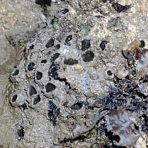
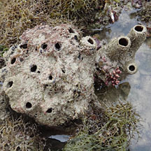
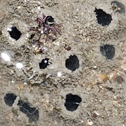
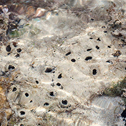

|
|
| sponges text index | photo index |
| Phylum Porifera |
| Potato
sponge Biemna sp.* Family Desmacellidae updated Jul 2020 Where seen? Like a potato with eyes, this buried sponge is found on some of our shores near reefs. Features: Spherical, oval or irregular lumpy, 10-30cm, usually buried with only chimneys sticking out of the surface. Chimneys about 1cm in diameter, 1-2cm tall. The surface is uneven and very hairy which traps sediments and sand, camouflaging the sponge. Colour pale brown. |
 Terumbu Pempang Tengah, Jul 10 |
 Terumbu Hantu, Apr 12 |
 Beting Bronok, Jun 12 |
*Species are difficult to positively identify without close examination.
On this website, they are grouped by external features for convenience of display.
| Potato sponges on Singapore shores |
On wildsingapore
flickr
|
| Other sightings on Singapore shores |
 Terumbu Raya, Mar 16 Photo shared by Marcus Ng on facebook. |
|
Links References
|